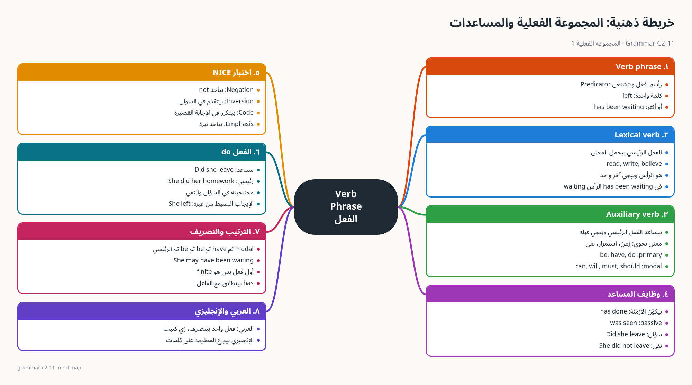

🦉
آداب اللغة الإنجليزية
⭐
0
🔥
استمر!
⚙️
كورس 2، المجموعة الفعلية 1: المجموعة الفعلية والمساعدات
📊
المستوى: من الصفر
كورس ٢ درس ١١
⚙️
القواعد الأكاديمية
📄 حمّل PDF الدرس
📝 ملخص الدرس (عربي) PDF
📝 Lesson Summary (English) PDF
🧠 الخريطة الذهنية PDF
🧠 شوف الخريطة الذهنية للدرس

→
الدرس اللي قبله
كل دروس الكورس